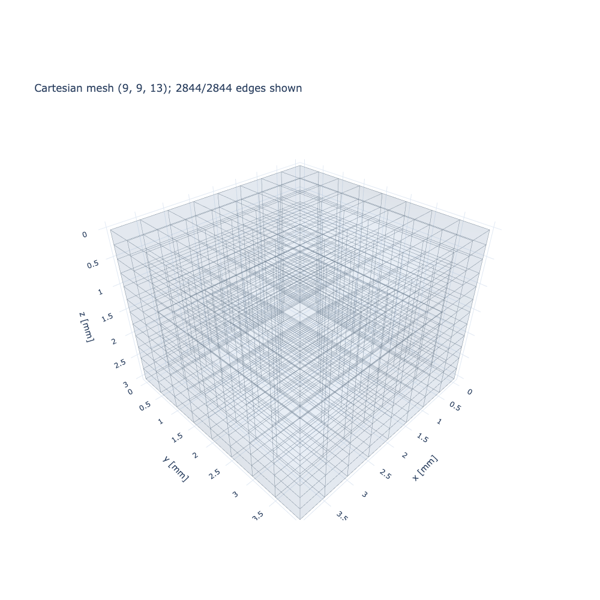
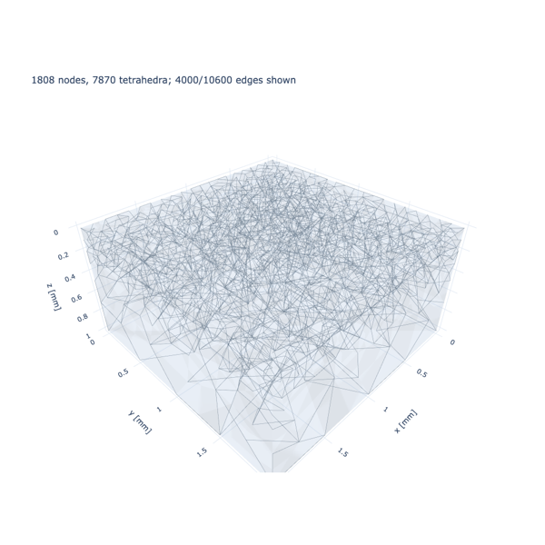

Meshes#
Create regular Cartesian grids and unstructured tetrahedral meshes. Compare explicit node counts and physical spacing, then inspect global and local mesh refinement in 3D plots.

Create a Cartesian mesh from physical resolution
Create a Cartesian mesh from physical resolution

Refine a tetrahedral mesh near layers and contacts
Refine a tetrahedral mesh near layers and contacts